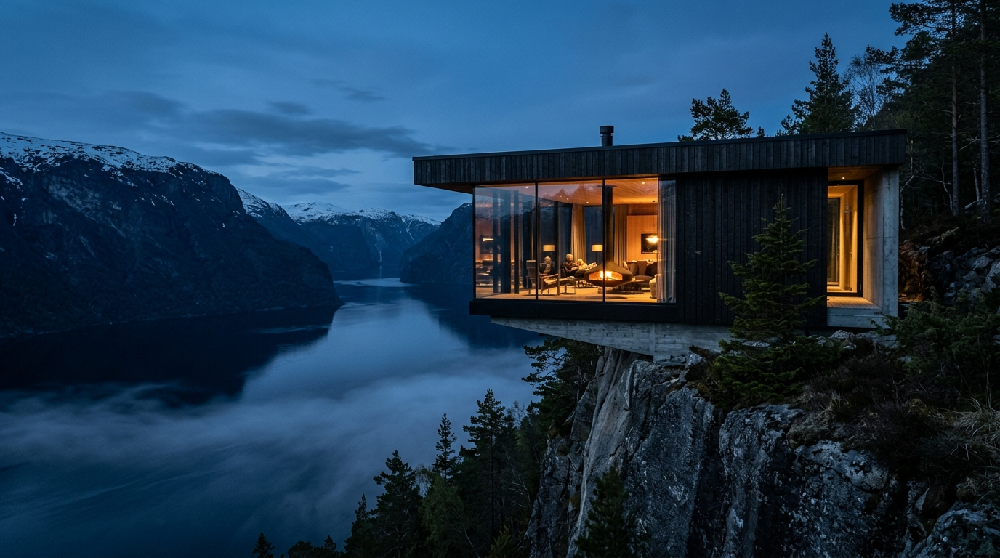
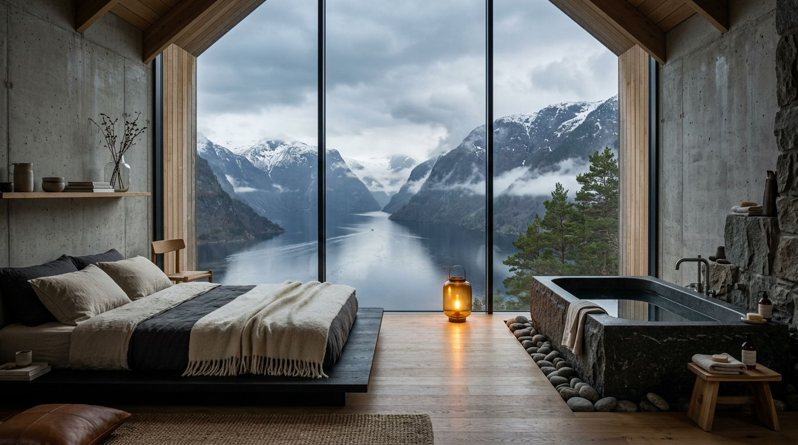
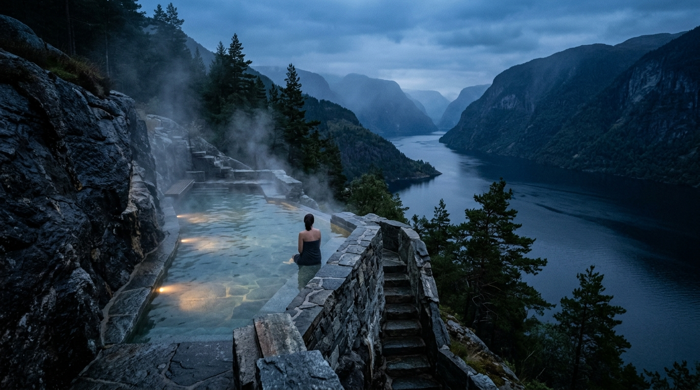
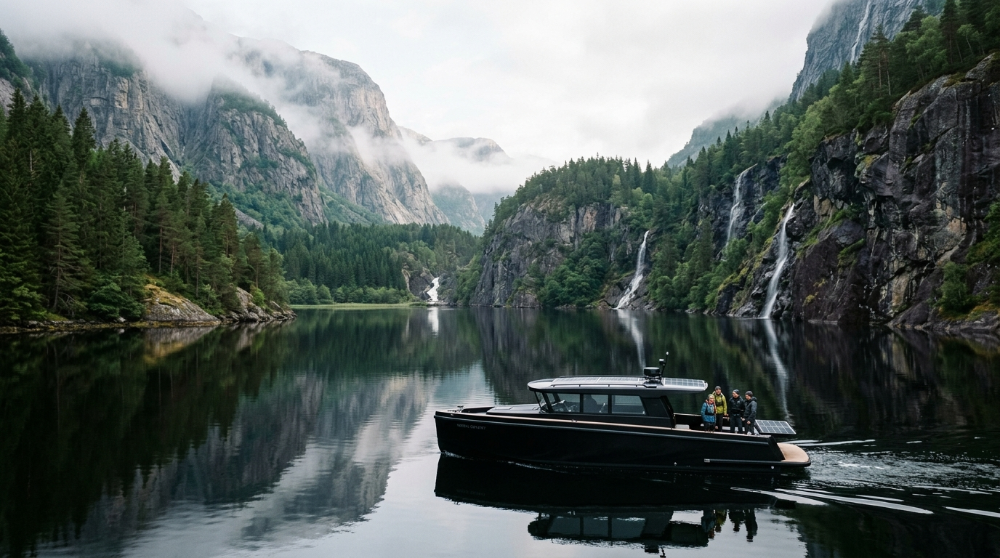

Twenty-eight private cliffside pavilions cantilevered over tidal waters. An elemental sanctuary dedicated to architectural silence, thermal hydrotherapy, and open-hearth coastal gastronomy.
Perched along the sheer granite precipice where the sub-arctic pine forest meets the deep tidal waters of Storfjorden, Sölvik is designed as a sanctuary of absolute reduction.
Here, architecture does not conquer the landscape; it creates sheltered lenses for observing mist, shifting tides, and the slow transit of sub-arctic light. Zero vehicle traffic, 100% subterranean geothermal heating, and total acoustic privacy.
"True luxury is the complete absence of noise. At Sölvik, we built only what was necessary to frame the weather, the water, and the quiet dignity of solid stone."
Each of our 28 pavilions is individually oriented to optimize privacy, natural dawn light, and uninterrupted vistas across Storfjorden.

Hovering 14 meters directly above the fjord with frameless triple-glazed panoramic glass, a hand-carved dark granite wood-fired soaking tub, charred pine millwork, and custom Norwegian wool linens.
Rooted in the ancient Nordic cadence of deep subterranean heat, cold marine water immersion, and aromatic wood smoke. Designed to reset the nervous system through pure physical contrast.
Naturally mineralized saltwater pools carved directly into the seaside granite ledge, overlooking the rising fjord mist.
A cantilevered wooden platform stepping directly into the deep, oxygen-rich glacial waters of Storfjorden.
Hand-hewn cedar walls infused with wild coastal birch smoke, with a panoramic observation window facing the peaks.

Private expeditions engineered for silence, wonder, and raw geographical connection.

Glide soundlessly beneath thousand-meter sheer granite waterfalls aboard our custom electric hybrid cruiser. Zero engine rumble, zero emissions — only the gentle sound of displaced water.
Bespoke seasonal consultation & pavilion reservation